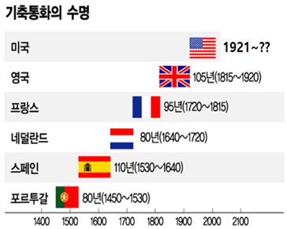

생각보다 짧은 기축통화의 수명
댓글
미국도 초중반까지 금본위제였으니까 최근 제외하곤 다 현물페깅이라고 봐야 맞을듯
ㄹㅇ 거기다 위 표는 달러가 1921년부터 기축통화라고 했는데
독자 기축통화로서의 스타트는 브리튼우드 체제 시작으로 알고 있어서
표도 틀린듯
중국이 다시 주인님되냐

이제 물리적거리 제약이 없어서 전세계가 달러를 쓰잖슴
기축 통화가 바뀔 때는 큰 전쟁이 있었는데? 이번엔 과연?
일단 병으로 된 탄산음료 싹 샀다. 코카, 펩시, 스프라이트, 칠성, 병맥주.... 또 뭐 있을까?
비트코인
은 / 금 을 기반으로 한 달러 / 파운드 등등 종이화폐에서
토큰 기반으로한 뭔가가 변화될 거 같긴함.
근데 요즘 금값 왜이러냐구우
다음 기축통화는 램이다
근데 금 은 본위제는 지금도 납득가는데
진짜로 달러는 뭔깡따구로 막찎어내나? 돈가진사람들 개븅신만드는건데
옛날 국가들도 그랬다가 전쟁으로 따갚되 했음
전쟁이 국가유지 본능이다 이거였군?
브레튼 우드 체제 붕괴 직전
미국과 사우디가 페트로달러 체제 만들어서
달러가 버텼는데
지금은 페트로 달러체제도 무너지고 있어서
포루투칼이나
스페인은
진짜 은을 사용한 화폐였으니
진정한 기축통화는 프랑스 또는 영국으로 봐야하나